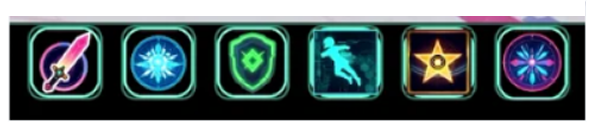

Cyber Cat Battle
作品の説明
CyberCats は、AIが描いたキャラクター＆背景＆UIだけで作った、シンプル操作のターン制バトル！
攻撃・スキル・防御・回避…見た目も動きもサイバーに決めて、ド派手なバトル演出を楽しもう。
スマートフォンは横画面用です。
操作方法
⏱ 1分で遊び方マスター！
Lv.1〜5の敵を順に倒して、最終ボスを撃破！
クリアするとアルバムが解放されます。
🔄 バトルの流れ
- 毎ターン エナジー+3（最大10）
- 行動を1つ選択（エナジーを消費）
- 敵の反撃！ただし回避成功でノーダメ✨
🪄 行動一覧（コスト / 効果）

アイコンの説明：左から攻撃、スキル、防御、回避、特殊スキル、必殺技
- 攻撃（2）：標準攻撃
- スキル（4）：強力な一撃！
- 防御（0）：受けるダメージを30%カット
- 回避（2）：成功→敵攻撃なし＋エナジー全回復 / 失敗→被ダメ1.2倍😨
- 特殊スキル（5）：キャラ固有バフ（例：与ダメ2倍 / 被ダメ0 など）
- 必殺技（6）：HP25%以下で覚醒演出🔥
※（ ）はエナジー消費量
⚔️ 進行・勝敗
- Lv.1〜4撃破 → 自動で次の敵へ（HP全回復）
- Lv.5撃破 → エンディング＆アルバム解放
- 全員倒れるとゲームオーバー
👀 画面の見方
- 上段：バトル画面（敵：左／プレイヤー：右）
- 下段：行動ボタン・エナジー・戦闘ログ
- 上部ボタン：キャラ変更／リロード／降参／アルバム